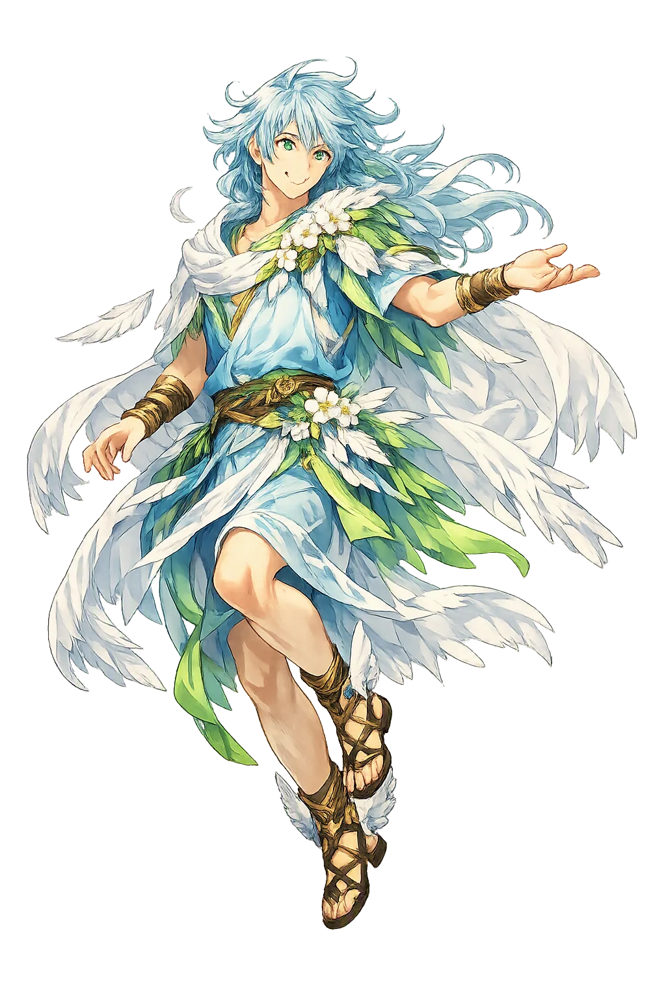
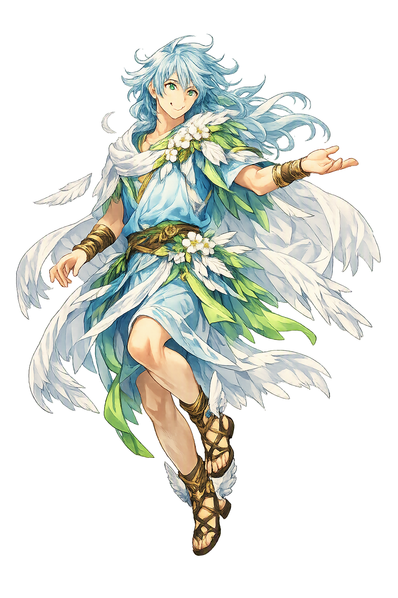

The Authentic Orthography
West Wind · Gentle bringer of spring breezes

Unicode restoration and ASCII comparison
Ζέφυρος
The name in its original Greek form. Zéphyros (Ζέφυρος) is attested in the source tradition — “The west wind”. Its aspirated consonants and acute accents carry the full phonetic and orthographic weight of the source tradition.
zephyros
Reduced to plain zephyros, the name loses everything that made it specific: aspirated consonants and acute accents. What remains is an ASCII string that machines can parse but that no longer speaks with its original voice.
Zéphyros
The Unicode restoration recovers what ASCII flattened. Zéphyros restores aspirated consonants and acute accents, returning the name to its original written dignity. The domain encodes to Punycode, but the browser displays the truth.
Zéphyros.com → xn--zphyros-bya.com
The non-ASCII characters in Zéphyros are encoded while the ASCII remains visible. To the DNS, it is Punycode. To humanity, it is Zéphyros.
How Zéphyros is preserved in writing
A bespoke provenance study for Zéphyros is being prepared by the PUNICODEX scholarly team.
Contribute scholarly provenance →Owned, ideal, and ASCII forms of Zéphyros
Zéphyros
Restores Ζέφυρος. The live temple domain — zéphyros.com.
zephyros
Flattens Ζέφυρος. The plain ASCII fallback — what DNS and legacy systems see.
How Zéphyros was spoken
The West Wind, Gentlest of the Anemoi
Zéphyros is the west wind of the Greeks — the mildest of the four Anemoi, the breeze that loosens winter and calls up the flowers. Where Bóreas rages and Nótos drowns ships in rain, Zéphyros is the wind the poets loved: the steady, fruit-bearing breath that fans the orchards of the blessed and carries spring north into the human world.
Gentlest of the Anemoi, his west wind loosens winter’s grip and brings the swallow season home.
With the harpy Podarge he sires Xánthos and Bálios, the immortal, wind-swift horses of Achilles (Iliad 16.148–151).
Roman poets wed him to Flora; Ovid lets her recall she was the nymph Chloris until Zéphyros took her as his bride (Fasti 5.195–212).
Stories of Zéphyros
Zéphyros is a minor god with an outsized poetic life: born of Dawn, lover of flowers, father of the fastest horses ever to run. His myths are few but luminous — each one binds the west wind to speed, desire, and the returning spring.
In Theogony 378–380, Hesiod records that Eōs (Dawn) bore to Astraios, the starry dusk, the mighty winds: Zéphyros, Bóreas, and Nótos — 'a goddess lying in love with a god'. The genealogy is exact: the clearing west wind is the child of first light and the star-field, born at the seam where night opens into day.
In Iliad 16 (149–151), Patroklos harnesses Achilles's immortal pair, Xánthos and Bálios, 'whom Pódargē, the harpy swift of foot, bore to Zéphyros the west wind as she grazed in a meadow beside the stream of Ōkeanos'. A wind coupling with a storm-snatcher in a meadow: Homer makes the horses' supernatural speed a literal inheritance. It is Xánthos, this same wind-begotten colt, who later speaks with a human voice to foretell Achilles's death (Iliad 19, 404–417).
In Ovid's Fasti 5 (195–214), the goddess Flora tells her own story: 'I who am now called Flora was once Chlōris… Zéphyros saw me, desired me, and carried me off' — then made her his lawful wife and gave her dominion over every flower, so that in her garden 'it is always spring'. Hyginus (Fabulae) preserves the fruit of the union: their son Karpós, 'Fruit' itself, the harvest that follows blossom.
In Odyssey 7 (112–132), the garden of King Alkinoös on Scheria — fruit upon fruit, pear ripening on pear, never failing winter or summer — is kept in perpetual bearing because 'the breath of Zéphyros, ever blowing, causes some fruits to swell and others to ripen'. Homer needs no allegory here: the west wind simply is the climate of paradise, the mildest air imaginable, made divine.
The Greeks did not usually worship the winds with temples and myths of their own — they felt them, and feeling was enough. Zéphyros is the clearest case of a natural force crossing into personality precisely because it was pleasant: the storm winds stay brute daimones, but the wind that opens the flowers earned a wife, a marriage bed, and children. His ambivalence is quiet but real — the same wind that breeds Achilles's immortal horses also breeds the speed that carries the hero toward death. For the Greeks the west wind was proof that the divine could be gentle without ceasing to be power: a daimon you pray to by opening the orchard gate.
Enter Extended Lore